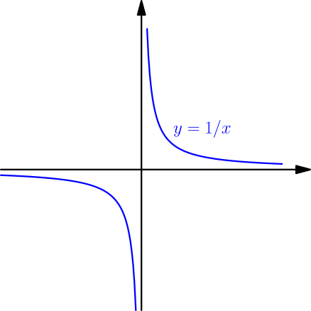

Integral Rules¶
Every derivative rule tells something about antiderivatives. Next we explore what we can do with different derivative rules that we know.
Antiderivatives of sin and cos¶
Because $\frac{d}{dx}\sin(x)=\cos(x)$ (TODO), we get the following result.
$$ \int \cos(x)\ dx = \sin(x)+C $$
On the other hand, $\frac{d}{dx}\cos(x) = -\sin(x)$, with an annoying minus sign. To get rid of that, we can add another minus sign in front of $\cos(x)$, and the minuses will cancel: $$ \begin{align} \frac{d}{dx}(-\cos(x)) &= (-1)\frac{d}{dx}\cos(x)\\ &= (-1)(-\sin(x)) = \sin(x) \end{align} $$
$$ \int \sin(x)\ dx = -\cos(x)+C $$
I don't recommend memorizing these integral rules; it's better to learn deriving them from the derivative rules in your head. We will find the antiderivatives of $\tan$ later.
Sum¶
Let's say you want to find the antiderivatives of $2x + \cos(x)$. Because $$ \frac{d}{dx}(x^2 + \sin(x)) = \frac{d}{dx} x^2 + \frac{d}{dx} \sin(x) = 2x+\cos(x), $$ we get $$ \int(2x+\cos(x))\ dx = x^2+\sin(x)+C. $$ More generally, if $F$ is an antiderivative of $f$ and $G$ is an antiderivative of $g$, then $$ \int (f(x)+g(x))\ dx = F(x)+G(x)+C. $$ Usually this result is written like this:
If $f$ and $g$ have antiderivatives, then $$ \int (f(x)+g(x))\ dx = \int f(x)\ dx + \int g(x)\ dx. $$
Each $\int \dots \ dx$ on the right side creates its own $+C$, so technically using this rule should look like this: $$ \begin{align} \int (2x+\cos(x))\ dx &= \int 2x\ dx + \int \cos(x)\ dx \\ &= (x^2+C_1)+(\sin(x)+C_2) \\ &= x^2+\sin(x)+\underbrace{(C_1+C_2)}_{\text{let's call this $C$}} \\ &= x^2+\sin(x)+C \end{align} $$ Here $C_1$ came from $\int 2x\ dx$ and $C_2$ came from $\int \cos(x)\ dx$. Letting $C=C_1+C_2$ simplified the result. In practice, that is unnecessary, and we just write $$ \int (2x+\cos(x))\ dx = \int 2x\ dx + \int \cos(x)\ dx = x^2+\sin(x)+C. $$
Let's see if the same rule works for integrals (as in area, not integrals as in antiderivative). For using part 2 of the fundamental theorem of calculus, we assume that $f$ and $g$ are continuous and they have antiderivatives $F$ and $G$. Then, with handy notation, we get $$ \begin{align} \int_a^b (f(x)+g(x))\ dx &= \left[ F(x)+G(x) \right]_a^b \\ &= (F(b)+G(b))-(F(a)+G(a)) \\ &= F(b)-F(a)+G(b)-G(a) \\ &= \int_a^bf(x)\ dx + \int_a^bg(x)\ dx. \end{align} $$
If $f$ and $g$ are continuous on $[a,b]$, then $$ \int_a^b (f(x)+g(x))\ dx = \int_a^b f(x)\ dx + \int_a^b g(x)\ dx. $$
Constant in front¶
For any constant $k$ and function $f$ with antiderivative $F$, we have $$ \frac{d}{dx} (kF(x)) = kF'(x) = kf(x), $$ so $$ \int kf(x)\ dx = kF(x)+C. $$ This result is typically written like this:
If $k$ is a constant and $f$ has antiderivatives, then $$ \int kf(x)\ dx = k\int f(x)\ dx $$
Just like with derivatives, this does not work if $k$ is not a constant. For example, $$ \int 3x \cdot 2x\ dx = \int 6x^2\ dx = 2x^3 + C, $$ but $$ 3x\int 2x\ dx = 3x(x^2 + C) = 3x^3 + 3Cx. $$
Also, the above way to write this result is slightly broken. If $k=0$, then the left side is $$ \int 0f(x)\ dx = \int 0\ dx = C, $$ but the right side is $$ 0\int f(x)\ dx = 0, $$ because multiplying anything with $0$ always gives $0$. This can be solved by simply writing one $+C$ at the end of the antiderivative calculation, e.g. like this: $$ \int 0\cos(x)\ dx = 0\int \cos(x)\ dx = 0\sin(x) + C = C $$
For integrals (not antiderivatives), we get $$ \begin{align} \int_a^b kf(x)\ dx &= \left[ kF(x) \right]_a^b \\ &= kF(b)-kF(a) \\ &= k(F(b)-F(a)) \\ &= k\int_a^b f(x)\ dx, \end{align} $$ and in this calculation, nothing breaks if $k=0$.
If $k$ is a constant and $f$ is continuous on $[a,b]$, then $$ \int_a^b kf(x)\ dx = k\int_a^b f(x)\ dx. $$
Antiderivatives of $x^n$ for $n \ne -1$¶
Let's calculate the antiderivative of $x^5$. According to the power rule $$ \frac{d}{dx} x^6 = 6x^5. $$ To get rid of $6$, we can multiply by $\frac{1}{6}$ to cancel it, and we get $$ \frac{d}{dx}\left( \frac{1}{6}x^6 \right) = \frac{1}{6} 6x^5 = x^5. $$ With any other number $n$ instead of $5$, we have $n+1$ instead of $6$. To avoid division by zero in $\frac{1}{n+1}$, we need to assume that $n \ne -1$.
For any number $n$ except $-1$, we have $$ \int x^n\ dx = \frac{1}{n+1} x^{n+1} + C. $$
Antiderivatives of $x^{-1}$¶
The above calculation does not work for $n=-1$. This does not mean that the function $f(x)=x^{-1}=1/x$ does not have an antiderivative. In fact, that function is continuous everywhere except at zero, so it has some antiderivative everywhere except at zero.

From logarithms (TODO), we know that $$ \frac{d}{dx} \ln(x) = \frac{1}{x}, $$ so $$ \int \frac{1}{x}\ dx = \ln(x). $$ However, this only works when $x$ is positive, because $\ln(x)$ is not defined for $x \le 0$. If $x$ is negative, then $-x=\abs{x}$ is positive, and with the chain rule, we get $$ \frac{d}{dx} \ln(-x) = \frac{1}{-x} \frac{d}{dx}(-x) = \frac{1}{-x}(-1) = \frac{1}{x}. $$ So, we have $$ \int \frac{1}{x}\ dx = \begin{cases} \ln(x)+C, & \text{if $x > 0$} \\ \ln(-x)+C, & \text{if $x < 0$.} \end{cases} $$ These cases can be combined together with absolute value, like this:
$$ \int \frac{1}{x}\ dx = \ln\abs{x} + C $$
You need to be somewhat careful when using the above result. For example, it might be tempting to do this: $$ \int_{-2}^2 \frac{1}{x}\ dx = \left[ \ln\abs{x} \right]_{-2}^2 = \ln\abs{2} - \ln\abs{-2} = \ln(2)-\ln(2) = 0 $$ This is wrong. Because $\frac{1}{x}$ is undefined at $0$, it's not integrable on $\leftsquarebracket-2,2]$, and the fundamental theorem of calculus doesn't apply. In general, we have $$ \int_a^b \frac{1}{x}\ dx = \begin{cases} \ln\abs{b}-\ln\abs{a}, & \text{if $a$ and $b$ are both positive or both negative} \\ \text{undefined} & \text{in all other cases}. \end{cases} $$
Antiderivatives of exponent functions¶
Because $\frac{d}{dx} e^x = e^x$ (TODO), we get the following result.
$$ \int e^x\ dx = e^x + C $$
More generally, for any positive base $b$, the derivative of $b^x$ is $b^x \ln(b)$ (TODO). So, if $\ln(b) \ne 0$, we have $$ \frac{d}{dx} \left( \frac{1}{\ln(b)}b^x \right) = \frac{1}{\ln(b)} \frac{d}{dx} b^x = \frac{1}{\ln(b)}b^x\ln(b) = b^x. $$ Note that $\ln(1) = 0$. Because $\ln$ is strictly increasing, this is the only way how $\ln$ can be zero.
If $b > 0$ and $b \ne 1$, then $$ \int b^x\ dx = \frac{1}{\ln(b)}b^x + C. $$
For $b=1$, we have $b^x = 1^x = 1$ and $\int 1\ dx = x+C$. Also note that $\ln(e)=\ln(e^1)=1$, so for $b=e$, the two results give the same formula.